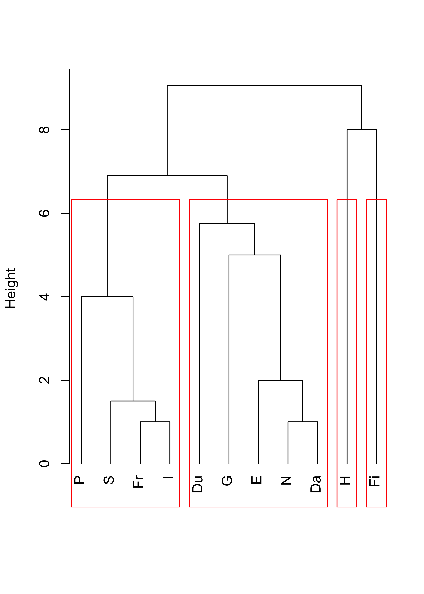
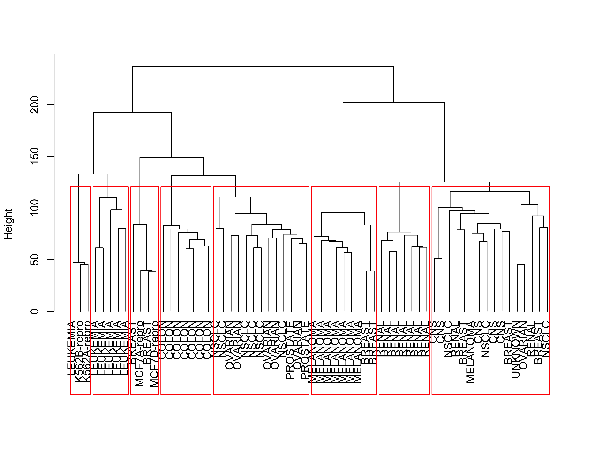
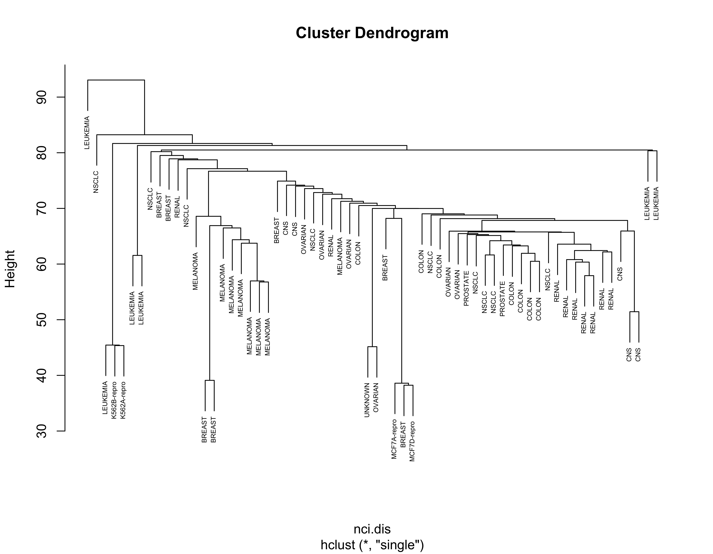
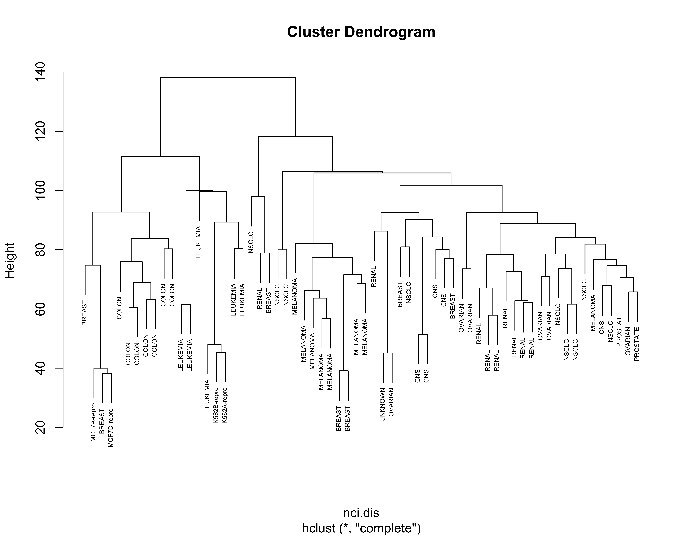
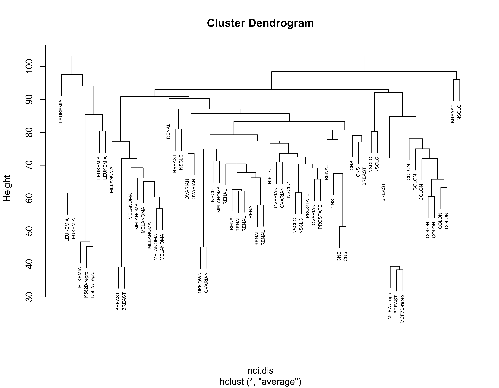
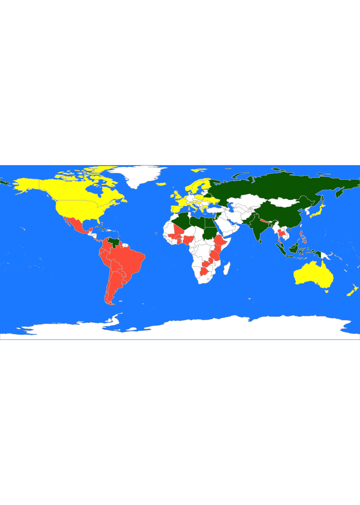

x <- read.table("data/breweries.dat", header = FALSE)
colnames(x) <- paste0("Brew-", 1:ncol(x))
x <- t(x)
d <- dist(x, method = "manhattan")23 Hierarchical clustering
Hierarchical clustering refers to a class of algorithms that work in a different way from the ones we have seen so far. Both k-means and model-based clustering try to find a pre-specified number of clusters simultaneously. Hierarchical methods are agglomerative–they start with n clusters (one singleton cluster for each observation in the data set), and form a hierarchical sequence of clusters of sizes n-1, n-2, …, 3, 2, and a final “cluster” composed of all the observations. The user then needs to decide where to cut the sequence, in other words, how many clusters to identify. Algorithms in this class are also called agglomerative, for obvious reasons.
The general algorithm can be described as follows:
- Set K = n (the number of observations in the data), and Start with n clusters;
- While K > 1:
- Merge 2 clusters to form K-1 clusters;
- Set
K = K - 1(i.e. decrease K by one).
The different versions (flavours) of this method are obtained by varying the criteria to decide which 2 clusters to merge at each run of step 2(i) above, which depends on how we measure the distance (or dissimilarity) between clusters.
There are a few different tools to decide how many clusters may be present in the data following a hierarchical clustering algorithm. The most commonly used is a graphical representation of the sequence of clusters, called a dendogram.
Please refer to your class notes for details on the different merging criteria (i.e. deciding which clusters to combine at each step) and the interpretation of a dendogram. Below we will illustrate the use of these algorithms on a few examples.
23.1 Breweries example
Beer drinkers were asked to rate 9 breweries on 26 attributes. The attributes were, e.g., Brewery has rich tradition; or Brewery makes very good Pils beer. Relative to each attribute, the informant had to assign each brewery a score on a 6-point scale ranging from 1=not true at all to 6=very true. We read the data, and use the function dist to compute the pairwise L_1 distances between the 9 breweries. Note that the data are available columnwise (\(p \times x\)) so we first transpose it before we compute the distances. We also change the misleading column names assigned by read.table, which are not features but rather observation numbers:
One implementation of hierarchical clustering methods in R is in the function hclust in package cluster. We first use Ward’s information criterion (corrected to appropriately use squared distances). The plot method for objects of class hclust produces the associated dendogram. The function rect.hclust computes the height at which one shuld cut the dendogram to obtain a desired number k of clusters. Below we show the result for K = 3 clusters:
# hierarchical
library(cluster)
# show the dendogram
plot(cl <- hclust(d, method = "ward.D2"), main = "", xlab = "", sub = "", hang = -1)
# identify 3 clusters
rect.hclust(cl, k = 3, border = "red")
Now we repeat the analysis but using Euclidean distances and single linkage, and show K = 3 clusters:
br.dis <- dist(x) # L2
br.hc <- hclust(br.dis, method = "single")
plot(br.hc)
br.hc.3 <- rect.hclust(br.hc, k = 3)
Note how these 3 clusters are somewhat different from the ones found before. However, the (V1, V4, V7) cluster is present in both partitions, and also the triplet (V3, V6, V8) stays together as well. It is interesting to compare these clusters with those found by K-means (see previous notes), in particular, these dendograms resemble the information on the silhouette plots to some extent.
23.2 Languages example
The details of this example were discussed in class. Here we present the results of three commonly used merging criteria: single linkage, complete linkage, average linkage, and Ward’s criterion. As usual, we start by reading the data, which in this case are the specific dissimilarities between languages discussed in class, and we arrange them in a matrix that can be used by hclust:
dd <- read.table("data/languages.dat", header = FALSE)
names(dd) <- c("E", "N", "Da", "Du", "G", "Fr", "S", "I", "P", "H", "Fi")
dd <- (dd + t(dd) / 2)
d <- as.dist(dd)Now we compute a hierarchical clustering sequence using single linkage, plot the corresponding dendogram and identify 4 clusters:
plot(cl <- hclust(d, method = "single"), main = "", xlab = "", sub = "", hang = -1)
rect.hclust(cl, k = 4, border = "red")Compare the above with the results obtained with complete linkage:
plot(cl <- hclust(d, method = "complete"), main = "", xlab = "", sub = "", hang = -1)
rect.hclust(cl, k = 4, border = "red")
With average linkage we obtain:
plot(cl <- hclust(d, method = "average"), main = "", xlab = "", sub = "", hang = -1)
rect.hclust(cl, k = 4, border = "red")
And finally, using Ward’s criterion results in the following dendogram and 4 clusters:
plot(cl <- hclust(d, method = "ward.D2"), main = "", xlab = "", sub = "", hang = -1)
rect.hclust(cl, k = 4, border = "red")
23.3 Cancer example
Here we revisit the Cancer example discussed before. We use Euclidean distances and Ward’s information criterion. Below we show the clusters identified when we stop the algorithm at K = 8, which based on the dendogram seems to be a reasonable choice:
data(nci, package = "ElemStatLearn")
nci.dis <- dist(t(nci), method = "euclidean")
plot(nci.hc.w <- hclust(nci.dis, method = "ward.D2"),
main = "",
xlab = "", sub = "", hang = -1, labels = rownames(nci)
)
rect.hclust(nci.hc.w, k = 8, border = "red")
For completeness, below we show the results obtained with the other linkage criteria, including Ward’s:
nci.hc.s <- hclust(nci.dis, method = "single")
nci.hc.c <- hclust(nci.dis, method = "complete")
nci.hc.a <- hclust(nci.dis, method = "average")
# plot them
plot(nci.hc.s, labels = colnames(nci), cex = .5)
plot(nci.hc.c, labels = colnames(nci), cex = .5)
plot(nci.hc.a, labels = colnames(nci), cex = .5)
Note that with these 3 other criteria no clear structure seems apparent in the data.
23.4 Nations example
This is a smaller Political Science dataset. Twelve countries were assessed on their perceived “likeness” by Political Science students. Note that (as in the Languages example above) in this example we do not have raw observations (features), we only have access to the already determined parwise dissimilarities. Below we show the results of using hierarchical clustering with complete and average linkage merging criteria, which produce identical clusters. You are encouraged to investigate what can be found with other merging criteria.
# read the pairwise dissimilarities
a2 <- read.table("data/nations2.dat", header = FALSE)
# since only the lower triangular matrix is available
# we need to copy it on the upper half
a2 <- a2 + t(a2)
# create a vector of country names, to be used later
nams2 <- c(
"BEL", "BRA", "CHI", "CUB", "EGY", "FRA",
"IND", "ISR", "USA", "USS", "YUG", "ZAI"
)
# compute hierarchical clustering using complete linkage
na.hc <- hclust(as.dist(a2), method = "complete")
plot(na.hc, labels = nams2)
# compute hierarchical clustering using average linkage
na.hc <- hclust(as.dist(a2), method = "average")
plot(na.hc, labels = nams2)
23.5 UN Votes
We revisit here the UN votes example (see Lecture 19). Using Euclidean distances and Ward’s criterion we obtain the following 3 clusters:
X <- read.table(file = "data/unvotes.csv", sep = ",", row.names = 1, header = TRUE)
un.dis <- dist(t(X), method = "euclidean")
un.hc <- hclust(un.dis, method = "ward.D2")
plot(un.hc, cex = .5)
un.hc.3 <- rect.hclust(un.hc, k = 3)
lapply(un.hc.3, names)
#> [[1]]
#> [1] "Australia" "Austria" "Belgium" "Bulgaria" "Canada"
#> [6] "Denmark" "Finland" "France" "Greece" "Hungary"
#> [11] "Iceland" "Ireland" "Israel" "Italy" "Japan"
#> [16] "Luxembourg" "Netherlands" "New.Zealand" "Norway" "Poland"
#> [21] "Portugal" "Spain" "Sweden" "UK" "Ukraine"
#> [26] "USA"
#>
#> [[2]]
#> [1] "Argentina" "Bahamas" "Chile" "Colombia" "Costa.Rica"
#> [6] "Cyprus" "Malta" "Mexico" "Panama" "Paraguay"
#> [11] "Peru" "Uruguay"
#>
#> [[3]]
#> [1] "Algeria" "Bangladesh" "Belarus"
#> [4] "Bolivia" "Botswana" "Brazil"
#> [7] "Brunei.Darussalam" "Burkina.Faso" "China"
#> [10] "Cuba" "Ecuador" "Egypt"
#> [13] "Ethiopia" "Ghana" "Guyana"
#> [16] "India" "Indonesia" "Jamaica"
#> [19] "Jordan" "Kenya" "Kuwait"
#> [22] "Libya" "Malaysia" "Mali"
#> [25] "Nepal" "Nigeria" "Pakistan"
#> [28] "Philippines" "Russian.Federation" "Singapore"
#> [31] "Sri.Lanka" "Sudan" "Syrian.Arab.Republic"
#> [34] "Tanzania" "Thailand" "Togo"
#> [37] "Trinidad.and.Tobago" "Venezuela" "Zambia"If we repeat the same exercise but using \(L_1\) distances we obtain different clusters.
un.dis.l1 <- dist(t(X), method = "manhattan")
un.hc.l1 <- hclust(un.dis.l1, method = "ward.D2")
plot(un.hc.l1, cex = .5)
un.hc.l1.3 <- rect.hclust(un.hc.l1, k = 3)
lapply(un.hc.l1.3, names)
#> [[1]]
#> [1] "Australia" "Austria" "Belgium" "Bulgaria" "Canada"
#> [6] "Cyprus" "Denmark" "Finland" "France" "Greece"
#> [11] "Hungary" "Iceland" "Ireland" "Israel" "Italy"
#> [16] "Japan" "Luxembourg" "Malta" "Netherlands" "New.Zealand"
#> [21] "Norway" "Poland" "Portugal" "Spain" "Sweden"
#> [26] "UK" "Ukraine" "USA"
#>
#> [[2]]
#> [1] "Algeria" "Bangladesh" "Belarus"
#> [4] "Brunei.Darussalam" "China" "Cuba"
#> [7] "Egypt" "India" "Indonesia"
#> [10] "Jordan" "Kuwait" "Libya"
#> [13] "Malaysia" "Pakistan" "Russian.Federation"
#> [16] "Sri.Lanka" "Sudan" "Syrian.Arab.Republic"
#> [19] "Venezuela"
#>
#> [[3]]
#> [1] "Argentina" "Bahamas" "Bolivia"
#> [4] "Botswana" "Brazil" "Burkina.Faso"
#> [7] "Chile" "Colombia" "Costa.Rica"
#> [10] "Ecuador" "Ethiopia" "Ghana"
#> [13] "Guyana" "Jamaica" "Kenya"
#> [16] "Mali" "Mexico" "Nepal"
#> [19] "Nigeria" "Panama" "Paraguay"
#> [22] "Peru" "Philippines" "Singapore"
#> [25] "Tanzania" "Thailand" "Togo"
#> [28] "Trinidad.and.Tobago" "Uruguay" "Zambia"It is easier to compare these 2 sets of clusters if we show them on a map. We first find the cluster labels corresponding to 3 clusters using Euclidean and \(L_1\) distances:
labs <- cutree(un.hc, k = 3)
labs.l1 <- cutree(un.hc.l1, k = 3)We can now use these labels to color a map, as we did previously. For the Euclidean distances we obtain:
library(rworldmap)
library(countrycode)
these <- countrycode(colnames(X), "country.name", "iso3c")
malDF <- data.frame(country = these, cluster = labs)
malMap <- joinCountryData2Map(malDF, joinCode = "ISO3", nameJoinColumn = "country")
par(mai = c(0, 0, 0, 0), xaxs = "i", yaxs = "i")
mapCountryData(malMap,
nameColumnToPlot = "cluster", catMethod = "categorical",
missingCountryCol = "white", addLegend = FALSE, mapTitle = "",
colourPalette = c("darkgreen", "hotpink", "tomato", "blueviolet", "yellow"),
oceanCol = "dodgerblue"
)
While with the \(L_1\) distances we get:
par(mai = c(0, 0, 0, 0), xaxs = "i", yaxs = "i")
mapCountryData(malMap,
nameColumnToPlot = "cluster", catMethod = "categorical",
missingCountryCol = "white", addLegend = FALSE, mapTitle = "",
colourPalette = c("darkgreen", "hotpink", "tomato", "blueviolet", "yellow"),
oceanCol = "dodgerblue"
)
Recall that, as discussed in class, the analyses above may be questionable, because these distance measures do not take into account the actual nature of the available features.